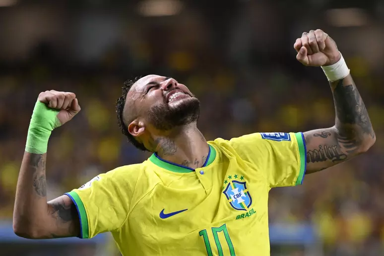

Neymar Jr. é uma figura icônica na história da seleção brasileira de futebol, contribuindo com seu talento extraordinário e paixão pelo jogo.
Estreou pela seleção principal em 2010, demonstrando habilidades excepcionais desde o início de sua carreira internacional.
Participou ativamente de várias edições da Copa América, representando o Brasil em busca de glória continental.
Neymar foi peça-chave na campanha da Copa do Mundo de 2014, sediada no Brasil, chegando às semifinais e deixando uma marca indelével.
Sua parceria dinâmica com outros jogadores notáveis, combinada com sua habilidade única, fez dele um líder dentro e fora de campo.
Além dos torneios oficiais, Neymar continua a brilhar em amistosos, solidificando seu papel como um dos maiores jogadores da história da seleção brasileira.
Em 2016, liderou o Brasil na conquista da medalha de ouro nos Jogos Olímpicos do Rio de Janeiro, um feito histórico para o futebol brasileiro.
Recebeu inúmeras honrarias, incluindo prêmios de melhor jogador e artilheiro em várias competições internacionais.
A trajetória de Neymar na seleção brasileira é uma história de conquistas, emoções e contribuições excepcionais para o futebol nacional. Seu legado perdurará como um dos maiores jogadores a vestir a camisa amarela.Além de suas habilidades técnicas, Neymar é conhecido por seu carisma e conexão única com os fãs, tornando-se uma verdadeira inspiração para gerações de jovens jogadores brasileiros.Seus momentos mágicos em campo, dribles incríveis e gols memoráveis fazem dele não apenas um atleta, mas uma figura lendária na rica história do futebol brasileiro.A camisa 10 do Brasil sempre foi usada com grande responsabilidade, e Neymar honrou esse legado com performances que ficarão marcadas na memória dos torcedores de todo o mundo.As competições futuras prometem mais capítulos emocionantes na história de Neymar com a seleção, e os amantes do futebol aguardam ansiosos para testemunhar seu brilho contínuo.Fora de campo, Neymar também desempenha um papel ativo em causas sociais, usando sua influência para impactar positivamente comunidades e instituições de caridade.O legado de Neymar na seleção brasileira é multifacetado, representando não apenas conquistas esportivas, mas também a inspiração e a esperança que ele traz para milhões de fãs em todo o mundo.